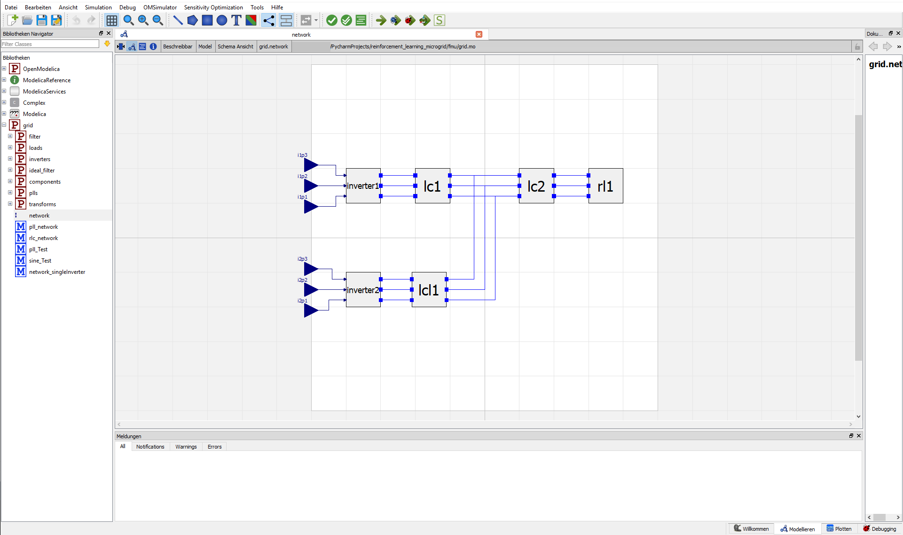
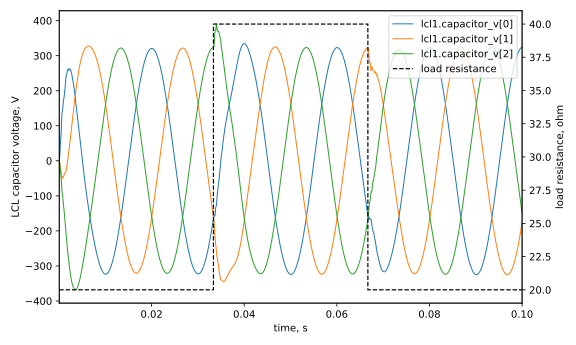

Two Inverter Static Droop Control
This example simulates a native two-inverter microgrid inspired by the OpenModelica Microgrid Gym two inverter static droop control example. The original OpenModelica network is useful as the physical schematic: two three-phase inverters feed a shared AC network and load through output filters.

The upper branch is the master inverter. It is voltage-forming: it tries to
shape the AC bus voltage and frequency. The lower branch is the slave inverter.
It is current-sourcing: it synchronizes to the local voltage and injects current
according to the inverse droop law. In the original network image, the upper
branch uses an LC filter lc1; the lower branch uses an LCL filter lcl1; the
right side is the shared load network.
The runnable Regelum example lives in
examples/two_inverter_static_droop/standalone.py. It is a complete standalone
script with the controller, branch dynamics, PRS construction, and plotting in
one file, so it can be simulated without an OpenModelica/FMU runtime.
Control Idea
The microgrid has to keep the AC bus in a useful operating region while both inverters share the load.
The master inverter uses direct droop control. It measures instantaneous active and reactive power at the bus:
Then it shifts its frequency and voltage setpoint through filtered droop laws:
Those setpoints go through voltage and current PI loops, and the result is a three-phase modulation signal for the master inverter.
The slave inverter does the opposite direction. It runs a PLL on its local capacitor voltage, estimates the local frequency, and uses inverse droop:
So the master forms the grid and the slave reacts to the grid. That is the important control split: one inverter creates the voltage reference; the other injects current to help supply the load.
ODE Regelum Model
The example keeps the same conceptual network but writes the electrical plant as
rg.ODENode equations wrapped into one rg.ODESystem. The controller is also
split into regular rg.Node blocks: droop, PI loops, PLL, inverse droop, and
current control all keep their memory in NodeState.
First, the standalone script imports NumPy for the three-phase vectors and the
framework as rg:
The master starts with a droop node. It reads current and voltage from the ODE plant and publishes frequency, voltage setpoint, and phase:
class MasterDroop(rg.Node):
class Inputs(rg.NodeInputs):
current: np.ndarray = rg.Input(src=lambda: Lc1Filter.State.inductor_i)
voltage: np.ndarray = rg.Input(src=lambda: Lc1Filter.State.capacitor_v)
class State(rg.NodeState):
frequency_hz: float = rg.Var(init=50.0)
voltage_setpoint: float = rg.Var(init=230.0 * math.sqrt(2.0))
phase: float = rg.Var(init=0.0)
phase_turns: float = rg.Var(init=0.0)
p_filter: float = rg.Var(init=0.0)
q_filter: float = rg.Var(init=0.0)
The voltage and current PI loops are separate nodes. Their integrators and anti-windup terms are explicit state variables:
class MasterVoltagePI(rg.Node):
class Inputs(rg.NodeInputs):
voltage: np.ndarray = rg.Input(src=lambda: Lc1Filter.State.capacitor_v)
phase: float = rg.Input(src=MasterDroop.State.phase)
voltage_setpoint: float = rg.Input(src=MasterDroop.State.voltage_setpoint)
class State(rg.NodeState):
current_setpoint_dq0: np.ndarray = rg.Var(init=zero_abc)
integral: np.ndarray = rg.Var(init=zero_abc)
windup: np.ndarray = rg.Var(init=zero_abc)
The slave side is also explicit. The PLL estimates phase/frequency, inverse
droop computes the dq current setpoint, and SlaveCurrentPI produces slave
modulation:
class SlavePLL(rg.Node):
class State(rg.NodeState):
cos_value: float = rg.Var(init=1.0)
sin_value: float = rg.Var(init=0.0)
frequency_hz: float = rg.Var(init=50.0)
theta: float = rg.Var(init=0.0)
theta_turns: float = rg.Var(init=0.0)
integral: float = rg.Var(init=0.0)
Two small inverter nodes convert controller modulation into phase voltages:
class Inverter1(rg.Node):
class Inputs(rg.NodeInputs):
modulation: np.ndarray = rg.Input(src=MasterCurrentPI.State.modulation)
class State(rg.NodeState):
phase_v: np.ndarray = rg.Var(init=zero_abc)
The physical network is the continuous part. Lc1Filter, Lcl1Filter,
Lc2Filter, and Rl1Load are rg.ODENode classes. Their state is declared as
NumPy arrays, and Regelum traces those arrays as CasADi MX vectors inside
dstate(...). For example, the master LC filter is ordinary vector algebra:
class Lc1Filter(rg.ODENode):
class Inputs(rg.NodeInputs):
inverter_v: np.ndarray = rg.Input(src=Inverter1.State.phase_v)
lcl1_grid_side_i: np.ndarray = rg.Input(src=lambda: Lcl1Filter.State.grid_side_i)
lc2_inductor_i: np.ndarray = rg.Input(src=lambda: Lc2Filter.State.inductor_i)
class State(rg.NodeState):
capacitor_v: np.ndarray = rg.Var(init=zero_abc)
inductor_i: np.ndarray = rg.Var(init=zero_abc)
def dstate(self, inputs: Inputs, state: State) -> State:
return self.State(
capacitor_v=(state.inductor_i + inputs.lcl1_grid_side_i - inputs.lc2_inductor_i)
/ self.capacitance,
inductor_i=(inputs.inverter_v - state.capacitor_v) / self.inductance,
)
The LCL slave branch is also an ODE node. Its capacitor voltage is what the plot records:
class Lcl1Filter(rg.ODENode):
class State(rg.NodeState):
capacitor_v: np.ndarray = rg.Var(init=zero_abc)
inverter_side_i: np.ndarray = rg.Var(init=zero_abc)
grid_side_i: np.ndarray = rg.Var(init=zero_abc)
Lc2Filter and Rl1Load complete the load-side network. The load resistance is
not embedded as symbolic branching inside the ODE; it is a normal discrete
scenario node. For a 2000-step run, the first third uses R, the second third
uses 2R, and the final third returns to R:
class ResistanceScenario(rg.Node):
class Inputs(rg.NodeInputs):
tick: int = rg.Input(src=rg.Clock.tick)
class State(rg.NodeState):
resistance: float = rg.Var(init=20.0)
def update(self, inputs: Inputs) -> State:
if inputs.tick < self.first_switch_tick:
resistance = self.base_resistance
elif inputs.tick < self.second_switch_tick:
resistance = 2.0 * self.base_resistance
else:
resistance = self.base_resistance
return self.State(resistance=resistance)
class Rl1Load(rg.ODENode):
class Inputs(rg.NodeInputs):
capacitor_v: np.ndarray = rg.Input(src=Lc2Filter.State.capacitor_v)
resistance: float = rg.Input(src=ResistanceScenario.State.resistance)
class State(rg.NodeState):
load_i: np.ndarray = rg.Var(init=zero_abc)
def dstate(self, inputs: Inputs, state: State) -> State:
return self.State(
load_i=(inputs.capacitor_v - inputs.resistance * state.load_i) / self.inductance,
)
Build The System
The PRS splits one simulation tick into four phases. The continuous electrical
network is one rg.ODESystem, so Regelum integrates the coupled ODE nodes
together on the base electrical step.
def build_system(*, steps: int = 2000) -> rg.PhasedReactiveSystem:
master_droop = MasterDroop()
master_voltage_pi = MasterVoltagePI()
master_current_pi = MasterCurrentPI()
slave_pll = SlavePLL()
slave_inverse_droop = SlaveInverseDroop()
slave_current_pi = SlaveCurrentPI()
inverter1 = Inverter1()
inverter2 = Inverter2()
resistance = ResistanceScenario(
first_switch_tick=steps // 3,
second_switch_tick=2 * steps // 3,
)
lc1 = Lc1Filter()
lcl1 = Lcl1Filter()
lc2 = Lc2Filter()
rl1 = Rl1Load()
electrical = rg.ODESystem(
nodes=(lc1, lcl1, lc2, rl1),
dt="0.00005",
backend="casadi",
method="cvodes",
options={"abstol": 1e-9, "reltol": 1e-8},
)
logger = ODEAPIMicrogridLogger()
return rg.PhasedReactiveSystem(
phases=[
rg.Phase(
"control",
nodes=(
master_droop,
master_voltage_pi,
master_current_pi,
slave_pll,
slave_inverse_droop,
slave_current_pi,
),
transitions=(rg.Goto("inverters"),),
is_initial=True,
),
rg.Phase("inverters", nodes=(inverter1, inverter2), transitions=(rg.Goto("scenario"),)),
rg.Phase("scenario", nodes=(resistance,), transitions=(rg.Goto("electrical"),)),
rg.Phase("electrical", nodes=(electrical,), transitions=(rg.Goto("log"),)),
rg.Phase("log", nodes=(logger,), transitions=(rg.Goto(rg.terminate),)),
],
)
This order is deliberate. The control phase resolves the controller DAG from
measurements to modulation, the inverter nodes compute phase voltages, the
scenario node publishes the sampled load resistance, electrical integrates the
continuous LC/LCL/load ODEs, and finally the logger records the LCL capacitor
voltage plus the active resistance.
Phase Graph
flowchart LR
init([init]) --> control["control<br/>droop + PI + PLL nodes"]
control --> inverters["inverters<br/>Inverter1 + Inverter2"]
inverters --> scenario["scenario<br/>ResistanceScenario"]
scenario --> electrical["electrical<br/>ODESystem(dt = 0.00005, backend = casadi)"]
electrical --> log["log<br/>ODEAPIMicrogridLogger"]
log --> done([⊥])
classDef control fill:#d9770622,stroke:#d97706,color:#111318
classDef inverters fill:#2f6fed22,stroke:#2f6fed,color:#111318
classDef scenario fill:#7c3aed22,stroke:#7c3aed,color:#111318
classDef electrical fill:#15803d22,stroke:#15803d,color:#111318
classDef log fill:#64748b22,stroke:#64748b,color:#111318
class control control
class inverters inverters
class scenario scenario
class electrical electrical
class log logNode Graph
Node colors follow phase colors. Dashed self-state arrows show state carried from the previous tick.
flowchart LR
masterDroop["MasterDroop"] --> masterVoltagePI["MasterVoltagePI"]
masterVoltagePI --> masterCurrentPI["MasterCurrentPI"]
masterCurrentPI --> inv1["Inverter1"]
slavePLL["SlavePLL"] --> slaveInverseDroop["SlaveInverseDroop"]
slaveInverseDroop --> slaveCurrentPI["SlaveCurrentPI"]
slavePLL --> slaveCurrentPI
slaveCurrentPI --> inv2["Inverter2"]
scenario["ResistanceScenario"] --> rl1["Rl1Load<br/>ODENode"]
inv1 --> lc1["Lc1Filter<br/>ODENode"]
inv2 --> lcl1["Lcl1Filter<br/>ODENode"]
lcl1 --> lc1
lc1 --> lcl1
lc1 --> lc2["Lc2Filter<br/>ODENode"]
lc2 --> rl1
rl1 --> lc2
lc1 --> masterDroop
lc1 --> masterVoltagePI
lc1 --> masterCurrentPI
lcl1 --> slavePLL
lcl1 --> slaveInverseDroop
lcl1 --> slaveCurrentPI
lcl1 --> logger["ODEAPIMicrogridLogger"]
master_droop_state(("state")) -.-> masterDroop
master_voltage_pi_state(("state")) -.-> masterVoltagePI
master_current_pi_state(("state")) -.-> masterCurrentPI
slave_pll_state(("state")) -.-> slavePLL
slave_inverse_state(("state")) -.-> slaveInverseDroop
slave_current_pi_state(("state")) -.-> slaveCurrentPI
lc1_state(("state")) -.-> lc1
lcl1_state(("state")) -.-> lcl1
lc2_state(("state")) -.-> lc2
rl1_state(("state")) -.-> rl1
logger_state(("state")) -.-> logger
scenario_state(("state")) -.-> scenario
classDef control fill:#d9770622,stroke:#d97706,color:#111318
classDef inverters fill:#2f6fed22,stroke:#2f6fed,color:#111318
classDef scenarioPhase fill:#7c3aed22,stroke:#7c3aed,color:#111318
classDef electrical fill:#15803d22,stroke:#15803d,color:#111318
classDef log fill:#64748b22,stroke:#64748b,color:#111318
classDef state fill:#94a3b822,stroke:#94a3b8,stroke-dasharray:3 3,color:#111318
class masterDroop,masterVoltagePI,masterCurrentPI,slavePLL,slaveInverseDroop,slaveCurrentPI control
class inv1,inv2 inverters
class scenario scenarioPhase
class lc1,lcl1,lc2,rl1 electrical
class logger log
class master_droop_state,master_voltage_pi_state,master_current_pi_state,slave_pll_state,slave_inverse_state,slave_current_pi_state,scenario_state,lc1_state,lcl1_state,lc2_state,rl1_state,logger_state statePhase Table
| Phase | Nodes | Role |
|---|---|---|
| control | MasterDroop, MasterVoltagePI, MasterCurrentPI, SlavePLL, SlaveInverseDroop, SlaveCurrentPI |
Computes master voltage-forming and slave current-sourcing modulation as a DAG of stateful nodes. |
| inverters | Inverter1, Inverter2 |
Converts modulation into three-phase inverter voltages. |
| scenario | ResistanceScenario |
Publishes the sampled load resistance: R, then 2R, then R. |
| electrical | ODESystem(Lc1Filter, Lcl1Filter, Lc2Filter, Rl1Load) |
Integrates the coupled electrical differential equations. |
| log | ODEAPIMicrogridLogger |
Stores the LCL capacitor voltages and resistance for plotting. |
Node Table
| Node | State | Reads |
|---|---|---|
| MasterDroop | frequency, voltage setpoint, phase, droop filter states | Lc1Filter current/voltage |
| MasterVoltagePI | current setpoint, PI integral, windup | Lc1Filter voltage and MasterDroop phase/setpoint |
| MasterCurrentPI | master modulation, PI integral, windup | Lc1Filter current and MasterVoltagePI current setpoint |
| SlavePLL | phase estimate, frequency estimate, PLL integral | Lcl1Filter capacitor voltage |
| SlaveInverseDroop | slave current setpoint and inverse-droop filter states | SlavePLL frequency and Lcl1Filter capacitor voltage |
| SlaveCurrentPI | slave modulation, PI integral, windup | Lcl1Filter current, SlavePLL phase, SlaveInverseDroop setpoint |
| Inverter1 | phase_v |
Master modulation |
| Inverter2 | phase_v |
Slave modulation |
ResistanceScenario |
resistance |
rg.Clock.tick |
| Lc1Filter | capacitor_v, inductor_i |
Master inverter voltage, Lcl1Filter.grid_side_i, Lc2Filter.inductor_i |
| Lcl1Filter | capacitor_v, inverter_side_i, grid_side_i |
Slave inverter voltage and Lc1Filter.capacitor_v |
| Lc2Filter | capacitor_v, inductor_i |
Lc1Filter.capacitor_v, Rl1Load.load_i |
| Rl1Load | load_i |
Lc2Filter.capacitor_v and ResistanceScenario.resistance |
| ODEAPIMicrogridLogger | samples |
Built-in rg.Clock.time, Lcl1Filter.capacitor_v, and resistance |
Simulation Result
The documentation plot is generated by:
The plotted signal combines the three-phase capacitor voltage of the slave LCL filter and the sampled load resistance. The resistance scenario occupies equal thirds of the run: nominal resistance, doubled resistance, and nominal resistance again.

The full standalone listing below is the concrete executable example: helper math, controllers, Regelum node definitions, PRS construction, simulation, and plotting in one file.
Standalone Python listing
from __future__ import annotations
import argparse
import math
import shutil
from pathlib import Path
import matplotlib.pyplot as plt
import numpy as np
import regelum as rg
VoltageResistanceSample = tuple[float, float, float, float, float]
def repo_root() -> Path:
for parent in Path(__file__).resolve().parents:
if (parent / "pyproject.toml").exists() and (parent / "src" / "regelum").exists():
return parent
raise RuntimeError("Could not locate the regelum repository root.")
def zero_abc() -> np.ndarray:
return np.zeros(3, dtype=float)
def clip(value: float, lower: float, upper: float) -> float:
return max(lower, min(upper, value))
def inst_rms(value: np.ndarray) -> float:
return float(np.linalg.norm(value) / math.sqrt(3.0))
def normalise_abc(value: np.ndarray) -> np.ndarray:
magnitude = inst_rms(value)
if magnitude == 0:
return value
return value / magnitude
def abc_to_alpha_beta(abc: np.ndarray) -> tuple[float, float]:
alpha = (2.0 / 3.0) * (abc[0] - 0.5 * abc[1] - 0.5 * abc[2])
beta = (2.0 / 3.0) * (0.866 * abc[1] - 0.866 * abc[2])
return float(alpha), float(beta)
def cos_sin(theta: float) -> tuple[float, float]:
return math.cos(theta), math.sin(theta)
def dq0_to_abc_cos_sin(dq0: np.ndarray, cos_value: float, sin_value: float) -> np.ndarray:
transform = np.array(
[
[cos_value, -sin_value, 1.0],
[
cos_value * (-0.5) - sin_value * (-0.866),
-(sin_value * (-0.5) + cos_value * (-0.866)),
1.0,
],
[
cos_value * (-0.5) - sin_value * 0.866,
-(sin_value * (-0.5) + cos_value * 0.866),
1.0,
],
],
dtype=float,
)
return transform @ dq0
def dq0_to_abc(dq0: np.ndarray, theta: float) -> np.ndarray:
return dq0_to_abc_cos_sin(dq0, *cos_sin(theta))
def abc_to_dq0_cos_sin(abc: np.ndarray, cos_value: float, sin_value: float) -> np.ndarray:
cos_shift_neg = cos_value * (-0.5) - sin_value * (-0.866)
sin_shift_neg = sin_value * (-0.5) + cos_value * (-0.866)
cos_shift_pos = cos_value * (-0.5) - sin_value * 0.866
sin_shift_pos = sin_value * (-0.5) + cos_value * 0.866
return np.array(
[
(2.0 / 3.0) * (cos_value * abc[0] + cos_shift_neg * abc[1] + cos_shift_pos * abc[2]),
(2.0 / 3.0)
* (-sin_value * abc[0] - sin_shift_neg * abc[1] - sin_shift_pos * abc[2]),
float(np.sum(abc) / 3.0),
],
dtype=float,
)
def abc_to_dq0(abc: np.ndarray, theta: float) -> np.ndarray:
return abc_to_dq0_cos_sin(abc, *cos_sin(theta))
def inst_power(voltage: np.ndarray, current: np.ndarray) -> float:
return float(np.dot(voltage, current))
def inst_reactive(voltage: np.ndarray, current: np.ndarray) -> float:
quadrature_voltage = np.roll(voltage, -1) - np.roll(voltage, -2)
return float(-0.5773502691896258 * np.dot(quadrature_voltage, current))
def pi_update(
*,
setpoint: np.ndarray,
measured: np.ndarray,
integral: np.ndarray,
windup: np.ndarray,
kp: float,
ki: float,
limits: tuple[float, float],
dt: float,
feedforward: np.ndarray | None = None,
kb: float = 1.0,
) -> tuple[np.ndarray, np.ndarray, np.ndarray]:
if feedforward is None:
feedforward = zero_abc()
error = setpoint - measured
next_integral = integral + (ki * error + windup) * dt
raw = kp * error + next_integral + feedforward
output = np.clip(raw, limits[0], limits[1])
next_windup = (raw - output) * kb
return output, next_integral, next_windup
def pt1_update(*, value: float, integral: float, gain: float, tau: float, dt: float) -> float:
output = value * gain - integral
if tau != 0:
return integral + output / tau * dt
if gain != 0:
return 0.0
return 0.0
def advance_phase_turns(phase_turns: float, frequency_hz: float, dt: float) -> float:
next_phase = phase_turns + dt * frequency_hz
if next_phase > 1.0:
next_phase -= 1.0
return next_phase
def save_lcl1_plot(samples: list[VoltageResistanceSample], output: Path) -> None:
output.parent.mkdir(parents=True, exist_ok=True)
time = [row[0] for row in samples]
v1 = [row[1] for row in samples]
v2 = [row[2] for row in samples]
v3 = [row[3] for row in samples]
resistance = [row[4] for row in samples]
fig, voltage_ax = plt.subplots(figsize=(8.0, 4.8), dpi=100)
voltage_ax.plot(time, v1, label="lcl1.capacitor_v[0]", linewidth=1.0)
voltage_ax.plot(time, v2, label="lcl1.capacitor_v[1]", linewidth=1.0)
voltage_ax.plot(time, v3, label="lcl1.capacitor_v[2]", linewidth=1.0)
voltage_ax.set_xlabel("time, s")
voltage_ax.set_ylabel("LCL capacitor voltage, V")
voltage_ax.set_xlim(min(time), max(time))
resistance_ax = voltage_ax.twinx()
resistance_ax.step(
time,
resistance,
where="post",
color="black",
linestyle="--",
linewidth=1.2,
label="load resistance",
)
resistance_ax.set_ylabel("load resistance, ohm")
voltage_lines, voltage_labels = voltage_ax.get_legend_handles_labels()
resistance_lines, resistance_labels = resistance_ax.get_legend_handles_labels()
voltage_ax.legend(
voltage_lines + resistance_lines,
voltage_labels + resistance_labels,
loc="upper right",
)
fig.tight_layout()
fig.savefig(output)
plt.close(fig)
class MasterDroop(rg.Node):
def __init__(
self,
*,
dt: float = 0.5e-4,
v_nom: float = 230.0 * math.sqrt(2.0),
freq_nom: float = 50.0,
) -> None:
self.dt = dt
self.v_nom = v_nom
self.freq_nom = freq_nom
class Inputs(rg.NodeInputs):
current: np.ndarray = rg.Input(src=lambda: Lc1Filter.State.inductor_i)
voltage: np.ndarray = rg.Input(src=lambda: Lc1Filter.State.capacitor_v)
class State(rg.NodeState):
frequency_hz: float = rg.Var(init=50.0)
voltage_setpoint: float = rg.Var(init=230.0 * math.sqrt(2.0))
phase: float = rg.Var(init=0.0)
phase_turns: float = rg.Var(init=0.0)
p_filter: float = rg.Var(init=0.0)
q_filter: float = rg.Var(init=0.0)
def update(self, inputs: Inputs, prev_state: State) -> State:
instant_power = -inst_power(inputs.voltage, inputs.current)
p_filter = pt1_update(
value=instant_power,
integral=prev_state.p_filter,
gain=1.0 / 40000.0,
tau=0.005,
dt=self.dt,
)
frequency_hz = p_filter + self.freq_nom
instant_q = -inst_reactive(inputs.voltage, inputs.current)
q_filter = pt1_update(
value=instant_q,
integral=prev_state.q_filter,
gain=1.0 / 1000.0,
tau=0.002,
dt=self.dt,
)
voltage_setpoint = q_filter + self.v_nom
phase_turns = advance_phase_turns(prev_state.phase_turns, frequency_hz, self.dt)
return self.State(
frequency_hz=frequency_hz,
voltage_setpoint=voltage_setpoint,
phase=phase_turns * 2.0 * math.pi,
phase_turns=phase_turns,
p_filter=p_filter,
q_filter=q_filter,
)
class MasterVoltagePI(rg.Node):
def __init__(self, *, dt: float = 0.5e-4, i_lim: float = 30.0) -> None:
self.dt = dt
self.i_lim = i_lim
class Inputs(rg.NodeInputs):
current: np.ndarray = rg.Input(src=lambda: Lc1Filter.State.inductor_i)
voltage: np.ndarray = rg.Input(src=lambda: Lc1Filter.State.capacitor_v)
phase: float = rg.Input(src=MasterDroop.State.phase)
voltage_setpoint: float = rg.Input(src=MasterDroop.State.voltage_setpoint)
class State(rg.NodeState):
current_setpoint_dq0: np.ndarray = rg.Var(init=zero_abc)
integral: np.ndarray = rg.Var(init=zero_abc)
windup: np.ndarray = rg.Var(init=zero_abc)
def update(self, inputs: Inputs, prev_state: State) -> State:
voltage_dq0 = abc_to_dq0(inputs.voltage, inputs.phase)
voltage_setpoint_dq0 = np.array([inputs.voltage_setpoint, 0.0, 0.0], dtype=float)
current_setpoint_dq0, integral, windup = pi_update(
setpoint=voltage_setpoint_dq0,
measured=voltage_dq0,
integral=prev_state.integral,
windup=prev_state.windup,
kp=0.025,
ki=60.0,
limits=(-self.i_lim, self.i_lim),
dt=self.dt,
)
return self.State(
current_setpoint_dq0=current_setpoint_dq0,
integral=integral,
windup=windup,
)
class MasterCurrentPI(rg.Node):
def __init__(self, *, dt: float = 0.5e-4) -> None:
self.dt = dt
class Inputs(rg.NodeInputs):
current: np.ndarray = rg.Input(src=lambda: Lc1Filter.State.inductor_i)
phase: float = rg.Input(src=MasterDroop.State.phase)
current_setpoint_dq0: np.ndarray = rg.Input(src=MasterVoltagePI.State.current_setpoint_dq0)
class State(rg.NodeState):
modulation: np.ndarray = rg.Var(init=zero_abc)
integral: np.ndarray = rg.Var(init=zero_abc)
windup: np.ndarray = rg.Var(init=zero_abc)
def update(self, inputs: Inputs, prev_state: State) -> State:
current_dq0 = abc_to_dq0(inputs.current, inputs.phase)
modulation_dq0, integral, windup = pi_update(
setpoint=inputs.current_setpoint_dq0,
measured=current_dq0,
integral=prev_state.integral,
windup=prev_state.windup,
kp=0.012,
ki=90.0,
limits=(-1.0, 1.0),
dt=self.dt,
)
modulation = np.clip(dq0_to_abc(modulation_dq0, inputs.phase), -1.0, 1.0)
return self.State(modulation=modulation, integral=integral, windup=windup)
class SlavePLL(rg.Node):
def __init__(self, *, dt: float = 0.5e-4, f_nom: float = 50.0) -> None:
self.dt = dt
self.f_nom = f_nom
class Inputs(rg.NodeInputs):
voltage: np.ndarray = rg.Input(src=lambda: Lcl1Filter.State.capacitor_v)
class State(rg.NodeState):
cos_value: float = rg.Var(init=1.0)
sin_value: float = rg.Var(init=0.0)
frequency_hz: float = rg.Var(init=50.0)
theta: float = rg.Var(init=0.0)
theta_turns: float = rg.Var(init=0.0)
integral: float = rg.Var(init=0.0)
def update(self, inputs: Inputs, prev_state: State) -> State:
normalised = normalise_abc(inputs.voltage)
alpha_beta = abc_to_alpha_beta(normalised)
dphi = alpha_beta[1] * prev_state.cos_value - alpha_beta[0] * prev_state.sin_value
integral = prev_state.integral + 200.0 * dphi * self.dt
frequency_hz = 10.0 * dphi + integral + self.f_nom
theta_turns = advance_phase_turns(prev_state.theta_turns, frequency_hz, self.dt)
theta = theta_turns * 2.0 * math.pi
cos_value, sin_value = cos_sin(theta)
return self.State(
cos_value=cos_value,
sin_value=sin_value,
frequency_hz=frequency_hz,
theta=theta,
theta_turns=theta_turns,
integral=integral,
)
class SlaveInverseDroop(rg.Node):
def __init__(
self,
*,
dt: float = 0.5e-4,
v_nom: float = 230.0 * math.sqrt(2.0),
i_lim: float = 30.0,
) -> None:
self.dt = dt
self.v_nom = v_nom
self.i_lim = i_lim
class Inputs(rg.NodeInputs):
voltage: np.ndarray = rg.Input(src=lambda: Lcl1Filter.State.capacitor_v)
frequency_hz: float = rg.Input(src=SlavePLL.State.frequency_hz)
class State(rg.NodeState):
current_setpoint_dq0: np.ndarray = rg.Var(init=zero_abc)
p_filter: float = rg.Var(init=0.0)
p_previous: float = rg.Var(init=0.0)
q_filter: float = rg.Var(init=0.0)
q_previous: float = rg.Var(init=0.0)
def update(self, inputs: Inputs, prev_state: State) -> State:
v_inst = inst_rms(inputs.voltage)
if v_inst <= 150.0:
return self.State(
current_setpoint_dq0=zero_abc(),
p_filter=prev_state.p_filter,
p_previous=prev_state.p_previous,
q_filter=prev_state.q_filter,
q_previous=prev_state.q_previous,
)
p_filter = pt1_update(
value=inputs.frequency_hz - 50.0,
integral=prev_state.p_filter,
gain=1.0,
tau=0.04,
dt=self.dt,
)
p_output = p_filter * 40000.0 + (p_filter - prev_state.p_previous)
q_filter = pt1_update(
value=v_inst - self.v_nom,
integral=prev_state.q_filter,
gain=1.0,
tau=0.01,
dt=self.dt,
)
q_output = q_filter * 50.0 + (q_filter - prev_state.q_previous)
active_current = p_output / v_inst
reactive_current = q_output / v_inst
droop = np.array(
[
clip(active_current / 3.0 * math.sqrt(2.0), -self.i_lim, self.i_lim),
clip(reactive_current / 3.0 * math.sqrt(2.0), -self.i_lim, self.i_lim),
0.0,
],
dtype=float,
)
return self.State(
current_setpoint_dq0=np.array([-droop[0], droop[1], droop[2]], dtype=float),
p_filter=p_filter,
p_previous=p_filter,
q_filter=q_filter,
q_previous=q_filter,
)
class SlaveCurrentPI(rg.Node):
def __init__(self, *, dt: float = 0.5e-4) -> None:
self.dt = dt
class Inputs(rg.NodeInputs):
current: np.ndarray = rg.Input(src=lambda: Lcl1Filter.State.inverter_side_i)
cos_value: float = rg.Input(src=SlavePLL.State.cos_value)
sin_value: float = rg.Input(src=SlavePLL.State.sin_value)
current_setpoint_dq0: np.ndarray = rg.Input(src=SlaveInverseDroop.State.current_setpoint_dq0)
class State(rg.NodeState):
modulation: np.ndarray = rg.Var(init=zero_abc)
integral: np.ndarray = rg.Var(init=zero_abc)
windup: np.ndarray = rg.Var(init=zero_abc)
def update(self, inputs: Inputs, prev_state: State) -> State:
current_dq0 = abc_to_dq0_cos_sin(inputs.current, inputs.cos_value, inputs.sin_value)
modulation_dq0, integral, windup = pi_update(
setpoint=inputs.current_setpoint_dq0,
measured=current_dq0,
integral=prev_state.integral,
windup=prev_state.windup,
kp=0.005,
ki=200.0,
limits=(-1.0, 1.0),
dt=self.dt,
)
modulation = np.clip(
dq0_to_abc_cos_sin(modulation_dq0, inputs.cos_value, inputs.sin_value),
-1.0,
1.0,
)
return self.State(modulation=modulation, integral=integral, windup=windup)
class Inverter1(rg.Node):
def __init__(self, *, v_dc: float = 1000.0) -> None:
self.gain = 0.5 * v_dc
class Inputs(rg.NodeInputs):
modulation: np.ndarray = rg.Input(src=MasterCurrentPI.State.modulation)
class State(rg.NodeState):
phase_v: np.ndarray = rg.Var(init=zero_abc)
def update(self, inputs: Inputs) -> State:
return self.State(phase_v=inputs.modulation * self.gain)
class Inverter2(rg.Node):
def __init__(self, *, v_dc: float = 1000.0) -> None:
self.gain = 0.5 * v_dc
class Inputs(rg.NodeInputs):
modulation: np.ndarray = rg.Input(src=SlaveCurrentPI.State.modulation)
class State(rg.NodeState):
phase_v: np.ndarray = rg.Var(init=zero_abc)
def update(self, inputs: Inputs) -> State:
return self.State(phase_v=inputs.modulation * self.gain)
class ResistanceScenario(rg.Node):
def __init__(
self,
*,
base_resistance: float = 20.0,
first_switch_tick: int,
second_switch_tick: int,
) -> None:
self.base_resistance = base_resistance
self.first_switch_tick = first_switch_tick
self.second_switch_tick = second_switch_tick
class Inputs(rg.NodeInputs):
tick: int = rg.Input(src=rg.Clock.tick)
class State(rg.NodeState):
resistance: float = rg.Var(init=20.0)
def update(self, inputs: Inputs) -> State:
if inputs.tick < self.first_switch_tick:
resistance = self.base_resistance
elif inputs.tick < self.second_switch_tick:
resistance = 2.0 * self.base_resistance
else:
resistance = self.base_resistance
return self.State(resistance=resistance)
class Lc1Filter(rg.ODENode):
def __init__(self, *, inductance: float = 0.001, capacitance: float = 1.0e-5) -> None:
self.inductance = inductance
self.capacitance = capacitance
class Inputs(rg.NodeInputs):
inverter_v: np.ndarray = rg.Input(src=Inverter1.State.phase_v)
lcl1_grid_side_i: np.ndarray = rg.Input(src=lambda: Lcl1Filter.State.grid_side_i)
lc2_inductor_i: np.ndarray = rg.Input(src=lambda: Lc2Filter.State.inductor_i)
class State(rg.NodeState):
capacitor_v: np.ndarray = rg.Var(init=zero_abc)
inductor_i: np.ndarray = rg.Var(init=zero_abc)
def dstate(self, inputs: Inputs, state: State) -> State: # ty: ignore[invalid-method-override]
return self.State(
capacitor_v=(state.inductor_i + inputs.lcl1_grid_side_i - inputs.lc2_inductor_i)
/ self.capacitance,
inductor_i=(inputs.inverter_v - state.capacitor_v) / self.inductance,
)
class Lcl1Filter(rg.ODENode):
def __init__(self, *, inductance: float = 0.001, capacitance: float = 1.0e-5) -> None:
self.inductance = inductance
self.capacitance = capacitance
class Inputs(rg.NodeInputs):
inverter_v: np.ndarray = rg.Input(src=Inverter2.State.phase_v)
bus_v: np.ndarray = rg.Input(src=Lc1Filter.State.capacitor_v)
class State(rg.NodeState):
capacitor_v: np.ndarray = rg.Var(init=zero_abc)
inverter_side_i: np.ndarray = rg.Var(init=zero_abc)
grid_side_i: np.ndarray = rg.Var(init=zero_abc)
def dstate(self, inputs: Inputs, state: State) -> State: # ty: ignore[invalid-method-override]
return self.State(
capacitor_v=(state.inverter_side_i - state.grid_side_i) / self.capacitance,
inverter_side_i=(inputs.inverter_v - state.capacitor_v) / self.inductance,
grid_side_i=(state.capacitor_v - inputs.bus_v) / self.inductance,
)
class Lc2Filter(rg.ODENode):
def __init__(self, *, inductance: float = 0.001, capacitance: float = 1.0e-5) -> None:
self.inductance = inductance
self.capacitance = capacitance
class Inputs(rg.NodeInputs):
bus_v: np.ndarray = rg.Input(src=Lc1Filter.State.capacitor_v)
load_i: np.ndarray = rg.Input(src=lambda: Rl1Load.State.load_i)
class State(rg.NodeState):
capacitor_v: np.ndarray = rg.Var(init=zero_abc)
inductor_i: np.ndarray = rg.Var(init=zero_abc)
def dstate(self, inputs: Inputs, state: State) -> State: # ty: ignore[invalid-method-override]
return self.State(
capacitor_v=(state.inductor_i - inputs.load_i) / self.capacitance,
inductor_i=(inputs.bus_v - state.capacitor_v) / self.inductance,
)
class Rl1Load(rg.ODENode):
def __init__(self, *, inductance: float = 0.001) -> None:
self.inductance = inductance
class Inputs(rg.NodeInputs):
capacitor_v: np.ndarray = rg.Input(src=Lc2Filter.State.capacitor_v)
resistance: float = rg.Input(src=ResistanceScenario.State.resistance)
class State(rg.NodeState):
load_i: np.ndarray = rg.Var(init=zero_abc)
def dstate(self, inputs: Inputs, state: State) -> State: # ty: ignore[invalid-method-override]
return self.State(
load_i=(inputs.capacitor_v - inputs.resistance * state.load_i) / self.inductance,
)
class ODEAPIMicrogridLogger(rg.Node):
class Inputs(rg.NodeInputs):
time_s: float = rg.Input(src=rg.Clock.time)
lcl1_capacitor_v: np.ndarray = rg.Input(src=Lcl1Filter.State.capacitor_v)
resistance: float = rg.Input(src=ResistanceScenario.State.resistance)
class State(rg.NodeState):
samples: list[VoltageResistanceSample] = rg.Var(init=list)
def update(self, inputs: Inputs, prev_state: State) -> State:
sample = (
inputs.time_s,
float(inputs.lcl1_capacitor_v[0]),
float(inputs.lcl1_capacitor_v[1]),
float(inputs.lcl1_capacitor_v[2]),
inputs.resistance,
)
prev_state.samples.append(sample)
return self.State(samples=prev_state.samples)
def build_system(*, steps: int = 2000) -> rg.PhasedReactiveSystem:
master_droop = MasterDroop()
master_voltage_pi = MasterVoltagePI()
master_current_pi = MasterCurrentPI()
slave_pll = SlavePLL()
slave_inverse_droop = SlaveInverseDroop()
slave_current_pi = SlaveCurrentPI()
inverter1 = Inverter1()
inverter2 = Inverter2()
resistance = ResistanceScenario(
first_switch_tick=steps // 3,
second_switch_tick=2 * steps // 3,
)
lc1 = Lc1Filter()
lcl1 = Lcl1Filter()
lc2 = Lc2Filter()
rl1 = Rl1Load()
electrical = rg.ODESystem(
nodes=(lc1, lcl1, lc2, rl1),
dt="0.00005",
backend="casadi",
method="cvodes",
options={"abstol": 1e-9, "reltol": 1e-8},
)
logger = ODEAPIMicrogridLogger()
return rg.PhasedReactiveSystem(
phases=[
rg.Phase(
"control",
nodes=(
master_droop,
master_voltage_pi,
master_current_pi,
slave_pll,
slave_inverse_droop,
slave_current_pi,
),
transitions=(rg.Goto("inverters"),),
is_initial=True,
),
rg.Phase("inverters", nodes=(inverter1, inverter2), transitions=(rg.Goto("scenario"),)),
rg.Phase("scenario", nodes=(resistance,), transitions=(rg.Goto("electrical"),)),
rg.Phase("electrical", nodes=(electrical,), transitions=(rg.Goto("log"),)),
rg.Phase("log", nodes=(logger,), transitions=(rg.Goto(rg.terminate),)),
],
)
def main() -> None:
parser = argparse.ArgumentParser()
parser.add_argument("--steps", type=int, default=2000)
parser.add_argument(
"--output",
type=Path,
default=Path(__file__).resolve().parent / "lcl1_voltage_and_resistance.svg",
)
parser.add_argument(
"--docs-output",
type=Path,
default=repo_root()
/ "docs"
/ "assets"
/ "examples"
/ "two_inverter_static_droop"
/ "lcl1_voltage_and_resistance.svg",
)
args = parser.parse_args()
system = build_system(steps=args.steps)
system.run(args.steps)
snapshot = system.snapshot()
samples = snapshot["ODEAPIMicrogridLogger.samples"]
save_lcl1_plot(samples, args.output)
args.docs_output.parent.mkdir(parents=True, exist_ok=True)
shutil.copyfile(args.output, args.docs_output)
print(f"steps={args.steps}")
print(f"samples={len(samples)}")
print(args.output.resolve())
print(args.docs_output.resolve())
if __name__ == "__main__":
main()